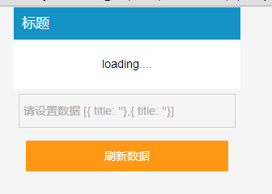
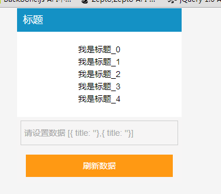
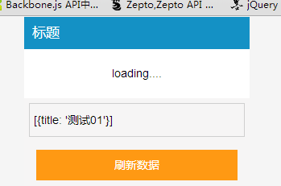
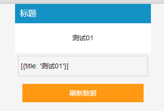

前情回顾
根据之前的学习，我们形成了一个view与一个messageCenter
view这块来说又内建了一套mvc的东西，我们这里来理一下
首先View一层由三部分组成：
① view
② dataAdpter
③ viewController
view一块两个重要数据是模板以及对应data，一个状态机status
这里view只负责根据状态取出对应的模板，而后根据传入的数据返回组装好的html
这里一个view多种状态是什么意思呢？
比如我有一个组件，但是里面有一圈数据是需要Ajax请求的，所以我的view可能就分为两个状态了
init->ajaxSuccess 这样的话首次加载默认的dom结构，数据加载结束后便再次渲染
PS：这里再次渲染的时候暂时图方便是采用将整个DOM结构换掉的手法，虽然简单粗暴却不合适，这块后期优化
这里数据的变化不由view负责，负责他的是dataAdapter
dataAdpter属于一个独立的模块，可用与多个viewController，dataAdpter内部首先维护着一个观察者数组，
然后是两个关键的datamodel以及viewmodel
datamodel用于操作，viewmodel会根据datamodel生成最终，然后使用viewmodel进行页面render，这个就是传入的data
若是我某一个datamodel对象发生变化便会通知观察者们，然后对应的view就会得到更新，该过程的发生点控制于viewController
viewController是连接view与dataAdpter的枢纽
viewController必须具有view，却可以没有dataAdpter，因为不是所有view都需要data才能渲染
我们实际工作中的大量业务逻辑会在viewController中定义完成，然后viewController也分了几个事件点
① create 触发onViewBeforeCreate、onViewAfterCreate事件
② show会实际将dom结构转入并且显示出来 触发onViewBeforeShow、onViewAfterShow事件
show的时候会绑定相关事件，事件借鉴于Backbone事件机制，每次注册前会先移除
③ 而后便是hide事件，他会隐藏我们的dom却不会移除，对应会有onViewBeforeHide、onViewAfterHide
④ destroy事件，会移除dom结构，并且删除实例、释放自身资源
以上是主流功能，还有一些功能不一定常用，比如我们任务view隐藏后，其所有状态事件全部应该移除，在show时重新绑定
messageCenter
现在没有什么大问题，却有一个小隐忧，这个消息中心会全局分发，一旦注册后，在触发时皆会触发，这个就有一个问题
我有一个alert组件，我自己内部在初始化时候注册了一个onShow的事件，我在show的时候真正的执行之
这个看上去没有什么问题，但是以下场景会有不一样的感受
我一个页面上有两个alert实例的话，我调用其中一个的时候，另一个alert的onShow也会被触发，这个是我们不愿意看见的
换个例子，我们一个页面上有两个IScroll，我们如使用messageCenter的话，一个滑动结束触发对应键值事件，很有可能两边会同时被触发
所以，这些都是我们需要关注的问题
下面让我们来详细整理
View相关梳理
现在View相关的功能点还不完全成熟，主要纠结点在于modelView改变后，view应该作何反应
若是一小点数据的改变却会引起整个dom结构的重组，这一点也是致命的，
其次一个view不同的状态会组成不同的view，但是一个view组成的html应该有一个容器，此“容器”现阶段我们概念感不是很强
所谓容器，不过是有模板嵌套的场景，后加载出来的html需要放入之前的某一个位置
若是子模板改变只会改变对应部分的dom、若是主模板改变就只能全部dom重组了！！！
于是我们简单整理后的代码如下：
首先来看看我们的view
1 Dalmatian.View = _.inherit({ 2 3 // @description 设置默认属性 4 _initialize: function () { 5 6 var DEFAULT_CONTAINER_TEMPLATE = '<div class="view"></div>'; 7 var VIEW_ID = 'dalmatian-view-'; 8 9 // @override 10 // @description template集合，根据status做template的map 11 // @example 12 /* 13 { 14 init: '<ul><%_.each(list, function(item){%><li><%=item.name%></li><%});%></ul>'//若是字符串表明全局性 15 ajaxLoading: 'loading', 16 ajaxSuc: 'success' 17 } 18 */ 19 this.templateSet = {}; 20 21 // @override 22 /* 23 ***这块我没有考虑清楚，一般情况下view是不需要在改变的，若是需要改变其实该设置到datamodel中*** 24 这个可以考虑默认由viewController注入给dataModel，然后后面就可操作了...... 25 这里的包裹器可能存在一定时序关系，这块后续再整理 26 27 与模板做映射关系，每个状态的模板对象可能对应一个容器，默认为根容器，后期可能会被修改 28 ajaxLoading: el, 29 ajaxSuc: selector 30 */ 31 this.wrapperSet = {}; 32 33 this.viewid = _.uniqueId(VIEW_ID); 34 this.currentStatus = null; 35 this.defaultContainer = DEFAULT_CONTAINER_TEMPLATE; 36 this.isNoWrapper = false; 37 38 //全局根元素 39 this.root = null; 40 //当前包裹器 41 this.curWrapper = null; 42 //当前模板对应解析后的html结构 43 44 }, 45 46 _initRoot: function () { 47 //根据html生成的dom包装对象 48 //有一种场景是用户的view本身就是一个只有一个包裹器的结构，他不想要多余的包裹器 49 if (!this.isNoWrapper) { 50 this.root = $(this.defaultContainer); 51 this.root.attr('id', this.viewid); 52 } 53 }, 54 55 // @description 构造函数入口 56 initialize: function (options) { 57 this._initialize(); 58 this.handleOptions(options); 59 this._initRoot(); 60 61 }, 62 63 // @override 64 // @description 操作构造函数传入操作 65 handleOptions: function (options) { 66 // @description 从形参中获取key和value绑定在this上 67 // l_wang options可能不是纯净的对象，而是函数什么的，这样需要注意 68 if (_.isObject(options)) _.extend(this, options); 69 70 }, 71 72 //处理包裹器，暂时不予理睬 73 _handleNoWrapper: function (html) { 74 //...不予理睬 75 }, 76 77 //根据状态值获取当前包裹器 78 _getCurWrapper: function (status, data) { 79 //处理root不存在的情况 80 this._handleNoWrapper(); 81 82 //若是以下逻辑无用，那么这个便是根元素 83 if (!data.wrapperSet || !data.wrapperSet[status]) { return this.root; } 84 if (_.isString(data.wrapperSet[status])) { return this.root.find(data.wrapperSet[status]); } 85 86 }, 87 88 // @description 通过模板和数据渲染具体的View 89 // @param status {enum} View的状态参数 90 // @param data {object} 匹配View的数据格式的具体数据 91 // @param callback {functiion} 执行完成之后的回调 92 render: function (status, data, callback) { 93 94 var templateFn, wrapper; 95 var template = this.templateSet[status]; 96 97 //默认将view中设置的默认wrapper注入值datamodel，datamodel会带入viewModel 98 wrapper = this._getCurWrapper(status, data); 99 100 if (!wrapper[0]) throw '包裹器参数错误'; 101 if (!template) return false; 102 103 //解析当前状态模板，编译成函数 104 templateFn = Dalmatian.template(template); 105 wrapper.html(templateFn(data)); 106 this.html = wrapper; 107 108 this.currentStatus = status; 109 110 _.callmethod(callback, this); 111 return true; 112 113 }, 114 115 // @override 116 // @description 可以被复写，当status和data分别发生变化时候 117 // @param status {enum} view的状态值 118 // @param data {object} viewmodel的数据 119 update: function (status, data) { 120 121 if (!this.currentStatus || this.currentStatus !== status) { 122 return this.render(status, data); 123 } 124 125 // @override 126 // @description 可复写部分，当数据发生变化但是状态没有发生变化时，页面仅仅变化的可以是局部显示 127 // 可以通过获取this.html进行修改 128 _.callmethod(this.onUpdate, this); 129 } 130 });
view基本只负责根据模板和数据生成html字符串，有一个不同的点是他需要记录自己的根元素，这个对我们后续操作有帮助
其中比较关键的是templateSet以及wrapperSet，这里的wrapperSet会被注入给dataAdpter的datamodel，后期便于调整
然后是我们的Adapter
1 Dalmatian.Adapter = _.inherit({ 2 3 // @description 构造函数入口 4 initialize: function (options) { 5 this._initialize(); 6 this.handleOptions(options); 7 }, 8 9 // @description 设置默认属性 10 _initialize: function () { 11 this.observers = []; 12 // this.viewmodel = {}; 13 this.datamodel = {}; 14 }, 15 16 // @description 操作构造函数传入操作 17 handleOptions: function (options) { 18 // @description 从形参中获取key和value绑定在this上 19 if (_.isObject(options)) _.extend(this, options); 20 }, 21 22 // @override 23 // @description 操作datamodel返回一个data对象形成viewmodel 24 format: function (datamodel) { 25 return datamodel; 26 }, 27 28 getViewModel: function () { 29 return this.format(this.datamodel); 30 }, 31 32 registerObserver: function (viewcontroller) { 33 // @description 检查队列中如果没有viewcontroller，从队列尾部推入 34 if (!_.contains(this.observers, viewcontroller)) { 35 this.observers.push(viewcontroller); 36 } 37 }, 38 39 setStatus: function (status) { 40 _.each(this.observers, function (viewcontroller) { 41 if (_.isObject(viewcontroller)) 42 viewcontroller.setViewStatus(status); 43 }); 44 }, 45 46 unregisterObserver: function (viewcontroller) { 47 // @description 从observers的队列中剔除viewcontroller 48 this.observers = _.without(this.observers, viewcontroller); 49 }, 50 51 notifyDataChanged: function () { 52 // @description 通知所有注册的观察者被观察者的数据发生变化 53 // this.viewmodel = this.format(this.datamodel); 54 var data = this.getViewModel(); 55 _.each(this.observers, function (viewcontroller) { 56 if (_.isObject(viewcontroller)) 57 _.callmethod(viewcontroller.update, viewcontroller, [data]); 58 }); 59 } 60 });
他只负责更新数据，并在数据变化时候通知ViewController处理变化，接下来就是我们的viewController了


1 Dalmatian.ViewController = _.inherit({ 2 3 // @description 构造函数入口 4 initialize: function (options) { 5 this._initialize(); 6 this.handleOptions(options); 7 8 //处理datamodel 9 this._handleDataModel(); 10 this.create(); 11 }, 12 13 // @description 默认属性设置点，根据该函数，我可以知道该类具有哪些this属性 14 _initialize: function () { 15 16 //用户设置的容器选择器，或者dom结构 17 this.containe; 18 //根元素 19 this.$el; 20 //默认容器 21 this.root = $('body'); 22 23 //一定会出现 24 this.view; 25 //可能会出现 26 this.adapter; 27 //初始化的时候便需要设置view的状态，否则会渲染失败，这里给一个默认值 28 this.viewstatus = 'init'; 29 30 }, 31 32 setViewStatus: function (status) { 33 this.viewstatus = status; 34 }, 35 36 // @description 操作构造函数传入操作 37 handleOptions: function (options) { 38 if (!options) return; 39 40 this._verify(options); 41 42 // @description 从形参中获取key和value绑定在this上 43 if (_.isObject(options)) _.extend(this, options); 44 }, 45 46 //处理dataAdpter中的datamodel，为其注入view的默认容器数据 47 _handleDataModel: function () { 48 //不存在就不予理睬 49 if (!this.adapter) return; 50 this.adapter.datamodel.wrapperSet = this.view.wrapperSet; 51 this.adapter.registerObserver(this); 52 }, 53 54 // @description 验证参数 55 _verify: function (options) { 56 //这个underscore方法新框架在报错 57 // if (!_.property('view')(options) && (!this.view)) throw Error('view必须在实例化的时候传入ViewController'); 58 if (options.view && (!this.view)) throw Error('view必须在实例化的时候传入ViewController'); 59 }, 60 61 // @description 当数据发生变化时调用onViewUpdate，如果onViewUpdate方法不存在的话，直接调用render方法重绘 62 update: function (data) { 63 64 //这样虽然减少回流，但会隐藏页面跳动 65 // _.callmethod(this.hide, this); 66 67 if (!_.callmethod(this.onViewUpdate, this, [data])) { 68 this.render(); 69 } 70 71 // _.callmethod(this.show, this); 72 }, 73 74 /** 75 * @override 76 * 77 */ 78 render: function () { 79 // @notation 这个方法需要被复写 80 // var data = this.adapter.format(this.origindata); 81 this.view.render(this.viewstatus, this.adapter && this.adapter.getViewModel()); 82 }, 83 84 // @description 返回基于当前view下的某节点 85 find: function (selector) { 86 if (!this.$el) return null; 87 return this.$el.find(selector); 88 }, 89 90 _create: function () { 91 this.render(); 92 93 //render 结束后构建好根元素dom结构 94 this.$el = $(this.view.html); 95 }, 96 97 create: function () { 98 99 //l_wang 这段代码没有看懂************ 100 // var $element = this.find(this.view.viewid); 101 // if ($element) return _.callmethod(this.recreate, this); 102 //l_wang 这段代码没有看懂************ 103 104 // @notation 在create方法调用前后设置onViewBeforeCreate和onViewAfterCreate两个回调 105 _.wrapmethod(this._create, 'onViewBeforeCreate', 'onViewAfterCreate', this); 106 107 }, 108 109 /** 110 * @description 如果进入create判断是否需要update一下页面，sync view和viewcontroller的数据 111 */ 112 _recreate: function () { 113 this.update(); 114 }, 115 116 recreate: function () { 117 _.wrapmethod(this._recreate, 'onViewBeforeRecreate', 'onViewAfterRecreate', this); 118 }, 119 120 //事件注册点 121 bindEvents: function (events) { 122 if (!(events || (events = _.result(this, 'events')))) return this; 123 this.unBindEvents(); 124 125 // @description 解析event参数的正则 126 var delegateEventSplitter = /^(\S+)\s*(.*)$/; 127 var key, method, match, eventName, selector; 128 129 //注意，此处做简单的字符串数据解析即可，不做实际业务 130 for (key in events) { 131 method = events[key]; 132 if (!_.isFunction(method)) method = this[events[key]]; 133 if (!method) continue; 134 135 match = key.match(delegateEventSplitter); 136 eventName = match[1], selector = match[2]; 137 method = _.bind(method, this); 138 eventName += '.delegateEvents' + this.view.viewid; 139 140 if (selector === '') { 141 this.$el.on(eventName, method); 142 } else { 143 this.$el.on(eventName, selector, method); 144 } 145 } 146 147 return this; 148 }, 149 150 //取消所有事件 151 unBindEvents: function () { 152 this.$el.off('.delegateEvents' + this.view.viewid); 153 return this; 154 }, 155 156 _show: function () { 157 this.bindEvents(); 158 this.root = $(this.container); 159 this.root.append(this.$el); 160 this.$el.show(); 161 }, 162 163 show: function () { 164 _.wrapmethod(this._show, 'onViewBeforeShow', 'onViewAfterShow', this); 165 }, 166 167 _hide: function () { 168 this.forze(); 169 this.$el.hide(); 170 }, 171 172 hide: function () { 173 _.wrapmethod(this._hide, 'onViewBeforeHide', 'onViewAfterHide', this); 174 }, 175 176 _forze: function () { 177 this.unBindEvents(); 178 }, 179 180 forze: function () { 181 _.wrapmethod(this._forze, 'onViewBeforeForzen', 'onViewAfterForzen', this); 182 }, 183 184 _destory: function () { 185 this.unBindEvents(); 186 this.$el.remove(); 187 // delete this; 188 }, 189 190 destory: function () { 191 _.wrapmethod(this._destory, 'onViewBeforeDestory', 'onViewAfterDestory', this); 192 } 193 });
这个控制器是连接view以及Adapter的桥梁，三者合一便可以处理一些问题，接下来看一个简单的demo
Ajax例子
1 <!doctype html> 2 <html lang="en"> 3 <head> 4 <meta charset="UTF-8"> 5 <title>ToDoList</title> 6 <meta name="viewport" content="width=device-width, initial-scale=1.0"> 7 <link rel="stylesheet" type="text/css" href="http://designmodo.github.io/Flat-UI/bootstrap/css/bootstrap.css"> 8 <link rel="stylesheet" type="text/css" href="http://designmodo.github.io/Flat-UI/css/flat-ui.css"> 9 <link href="../style/main.css" rel="stylesheet" type="text/css" /> 10 <style type="text/css"> 11 .cui-alert { width: auto; position: static; } 12 .txt { border: #cfcfcf 1px solid; margin: 10px 0; width: 80%; } 13 ul, li { padding: 0; margin: 0; } 14 .cui_calendar, .cui_week { list-style: none; } 15 .cui_calendar li, .cui_week li { float: left; width: 14%; overflow: hidden; padding: 4px 0; text-align: center; } 16 </style> 17 </head> 18 <body> 19 <article id="container"> 20 </article> 21 <script type="text/underscore-template" id="template-ajax-init"> 22 <div class="cui-alert" > 23 <div class="cui-pop-box"> 24 <div class="cui-hd"> 25 <%=title%> 26 </div> 27 <div class="cui-bd"> 28 <div class="cui-error-tips"> 29 </div> 30 <div class="cui-roller-btns" style="padding: 4px; "><input type="text" placeholder="请设置数据 [{ title: ''},{ title: ''}]" style="margin: 2px; width: 100%; " id="ajax_data" class="txt"></div> 31 <div class="cui-roller-btns"> 32 <div class="cui-flexbd cui-btns-sure"><%=confirm%></div> 33 </div> 34 </div> 35 </div> 36 </div> 37 </script> 38 <script type="text/underscore-template" id="template-ajax-suc"> 39 <ul> 40 <% console.log(ajaxData) %> 41 <%for(var i = 0; i < ajaxData.length; i++) { %> 42 <li><%=ajaxData[i].title %></li> 43 <% } %> 44 </ul> 45 </script> 46 47 <script type="text/underscore-template" id="template-ajax-loading"> 48 loading.... 49 </script> 50 51 <script type="text/javascript" src="../../vendor/underscore-min.js"></script> 52 <script type="text/javascript" src="../../vendor/zepto.min.js"></script> 53 <script src="../../src/underscore.extend.js" type="text/javascript"></script> 54 <script src="../../src/util.js" type="text/javascript"></script> 55 <script src="../../src/message-center-wl.js" type="text/javascript"></script> 56 <script src="../../src/mvc-wl.js" type="text/javascript"></script> 57 <script type="text/javascript"> 58 59 //模拟Ajax请求 60 function getAjaxData(callback, data) { 61 setTimeout(function () { 62 if (!data) { 63 data = []; 64 for (var i = 0; i < 5; i++) { 65 data.push({ title: '我是标题_' + i }); 66 } 67 } 68 callback(data); 69 }, 1000); 70 } 71 72 var AjaxView = _.inherit(Dalmatian.View, { 73 _initialize: function ($super) { 74 //设置默认属性 75 $super(); 76 77 this.templateSet = { 78 init: $('#template-ajax-init').html(), 79 loading: $('#template-ajax-loading').html(), 80 ajaxSuc: $('#template-ajax-suc').html() 81 }; 82 83 this.wrapperSet = { 84 loading: '.cui-error-tips', 85 ajaxSuc: '.cui-error-tips' 86 }; 87 } 88 }); 89 90 var AjaxAdapter = _.inherit(Dalmatian.Adapter, { 91 _initialize: function ($super) { 92 $super(); 93 this.datamodel = { 94 title: '标题', 95 confirm: '刷新数据' 96 }; 97 this.datamodel.ajaxData = {}; 98 }, 99 100 format: function (datamodel) { 101 //处理datamodel生成viewModel的逻辑 102 return datamodel; 103 }, 104 105 ajaxLoading: function () { 106 this.setStatus('loading'); 107 this.notifyDataChanged(); 108 }, 109 110 ajaxSuc: function (data) { 111 this.datamodel.ajaxData = data; 112 this.setStatus('ajaxSuc'); 113 this.notifyDataChanged(); 114 } 115 }); 116 117 var AjaxViewController = _.inherit(Dalmatian.ViewController, { 118 _initialize: function ($super) { 119 $super(); 120 //设置基本的属性 121 this.view = new AjaxView(); 122 this.adapter = new AjaxAdapter(); 123 this.viewstatus = 'init'; 124 this.container = '#container'; 125 }, 126 127 //显示后Ajax请求数据 128 onViewAfterShow: function () { 129 this._handleAjax(); 130 }, 131 132 _handleAjax: function (data) { 133 this.adapter.ajaxLoading(); 134 getAjaxData($.proxy(function (data) { 135 this.adapter.ajaxSuc(data); 136 }, this), data); 137 }, 138 139 events: { 140 'click .cui-btns-sure': function () { 141 var data = this.$el.find('#ajax_data').val(); 142 data = eval('(' + data + ')'); 143 this._handleAjax(data); 144 } 145 } 146 }); 147 148 var a = new AjaxViewController(); 149 a.show(); 150 151 </script> 152 </body> 153 </html>
这段代码的核心在此
1 //模拟Ajax请求 2 function getAjaxData(callback, data) { 3 setTimeout(function () { 4 if (!data) { 5 data = []; 6 for (var i = 0; i < 5; i++) { 7 data.push({ title: '我是标题_' + i }); 8 } 9 } 10 callback(data); 11 }, 1000); 12 } 13 14 var AjaxView = _.inherit(Dalmatian.View, { 15 _initialize: function ($super) { 16 //设置默认属性 17 $super(); 18 19 this.templateSet = { 20 init: $('#template-ajax-init').html(), 21 loading: $('#template-ajax-loading').html(), 22 ajaxSuc: $('#template-ajax-suc').html() 23 }; 24 25 this.wrapperSet = { 26 loading: '.cui-error-tips', 27 ajaxSuc: '.cui-error-tips' 28 }; 29 } 30 }); 31 32 var AjaxAdapter = _.inherit(Dalmatian.Adapter, { 33 _initialize: function ($super) { 34 $super(); 35 this.datamodel = { 36 title: '标题', 37 confirm: '刷新数据' 38 }; 39 this.datamodel.ajaxData = {}; 40 }, 41 42 format: function (datamodel) { 43 //处理datamodel生成viewModel的逻辑 44 return datamodel; 45 }, 46 47 ajaxLoading: function () { 48 this.setStatus('loading'); 49 this.notifyDataChanged(); 50 }, 51 52 ajaxSuc: function (data) { 53 this.datamodel.ajaxData = data; 54 this.setStatus('ajaxSuc'); 55 this.notifyDataChanged(); 56 } 57 }); 58 59 var AjaxViewController = _.inherit(Dalmatian.ViewController, { 60 _initialize: function ($super) { 61 $super(); 62 //设置基本的属性 63 this.view = new AjaxView(); 64 this.adapter = new AjaxAdapter(); 65 this.viewstatus = 'init'; 66 this.container = '#container'; 67 }, 68 69 //显示后Ajax请求数据 70 onViewAfterShow: function () { 71 this._handleAjax(); 72 }, 73 74 _handleAjax: function (data) { 75 this.adapter.ajaxLoading(); 76 getAjaxData($.proxy(function (data) { 77 this.adapter.ajaxSuc(data); 78 }, this), data); 79 }, 80 81 events: { 82 'click .cui-btns-sure': function () { 83 var data = this.$el.find('#ajax_data').val(); 84 data = eval('(' + data + ')'); 85 this._handleAjax(data); 86 } 87 } 88 }); 89 90 var a = new AjaxViewController(); 91 a.show();
首先定义view
其次定义数据处理层
最后将两者合一
重点放到了数据处理中，实际上的逻辑由Controller处理，真正的html又view生成，整个代码如上......




结语
今天对之前的学习进行了一些整理，由于过程中多数时间在编码，所以描述少了一点，整个这块还是有一些问题，我们留待后期解决吧